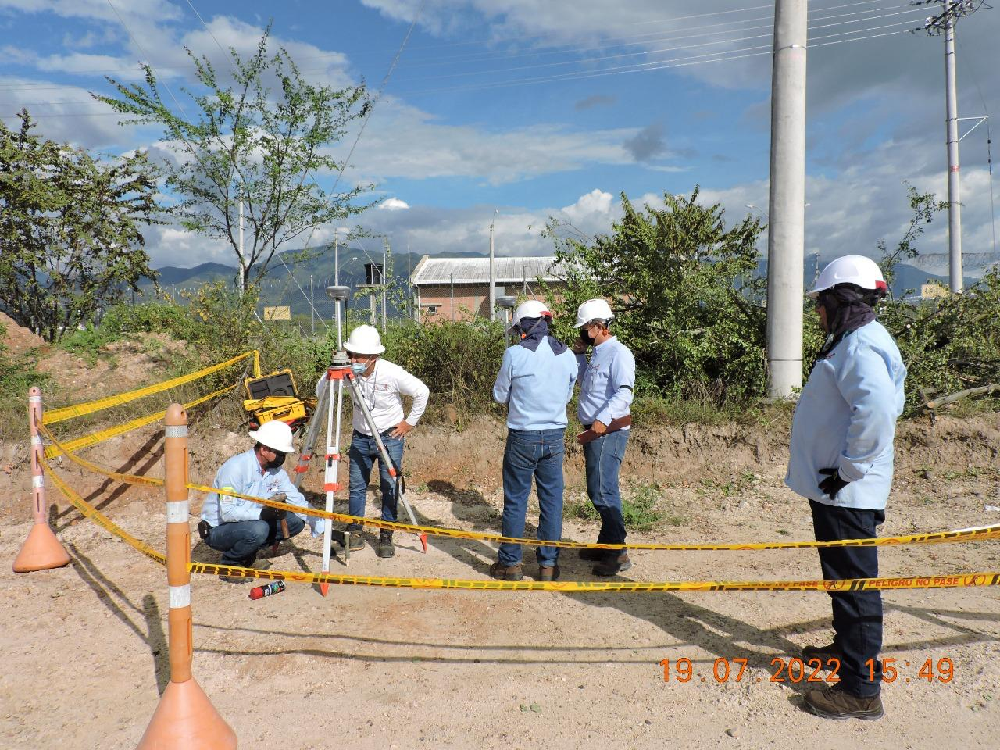
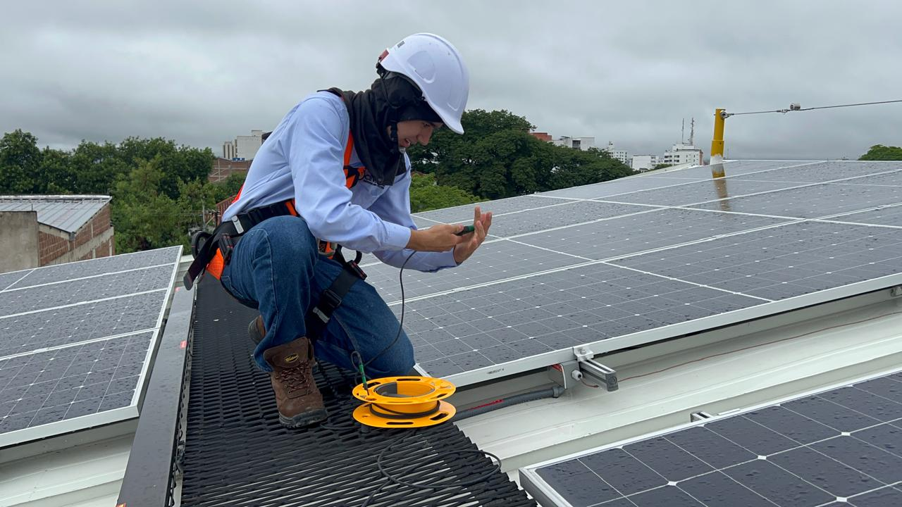
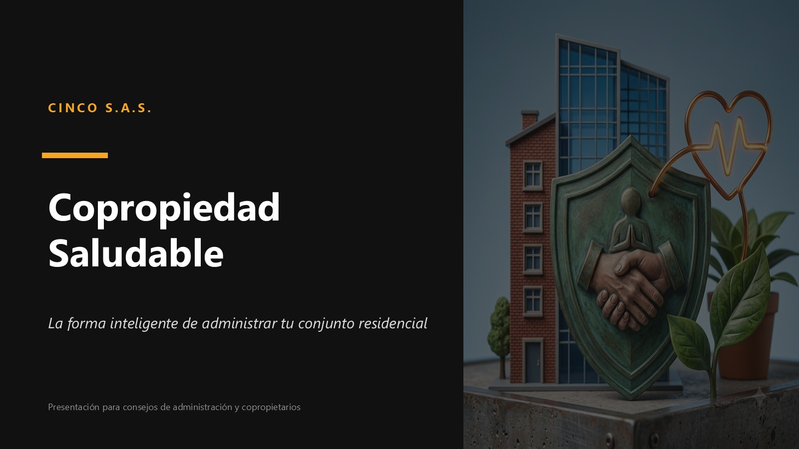

Pasa el mouse sobre cada línea para ver el detalle — en el celular, tócala.
 01
01
Interventorías técnicas y administrativas en proyectos de construcción, FAER, PRONE, de prestación de servicios y de sistemas de generación solar fotovoltaica, en compañías del sector público y privado. Más de 20 servicios de este tipo son nuestra mejor carta de presentación.
 02
02
Gestión eficiente de la energía y transición energética: diagnóstico y estrategias orientadas a reducir las pérdidas de energía y otros fluidos, un servicio probado tanto en el sector público como en el privado.
 03
03
Más de 30 proyectos de distribución, transformación e instalaciones de uso final de la energía, ejecutados para entidades públicas y privadas con altos estándares de calidad y seguridad.

04Diseño de grandes superficies, instalaciones de uso final y proyectos de distribución y transformación hasta 34.500 voltios. Más de 30 proyectos de ingeniería diseñados para empresas operadoras de red, instituciones educativas, sector público y privado.
 05
05
Formación a personal de la electrotecnia y empresas operadoras de red en la actualización del RETIE, identificación de pérdidas de energía, trabajo en alturas y gestión de la seguridad en el trabajo mediante software de entrenamiento propio.

06Medición y análisis de variables eléctricas y del desempeño de sistemas de generación solar fotovoltaica, para verificar su correcto funcionamiento y eficiencia.

07Diseño y desarrollo de aplicativos web a la medida para digitalizar y optimizar los procesos internos de nuestros clientes.
Escríbenos y te contactamos en poco tiempo.